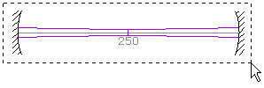
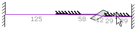
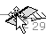
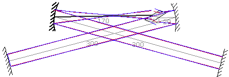

LaserCanvas 5 > Tutorials > Bow-Tie Resonator >
Part 1. Construct the Cavity
< Prev | Next >
The cavity will consist of a Brewster-angled Nd:YAG crystal, which has a refractive index of 1.82; two 200-mm radius of curvature focusing mirrors, and flat cavity end mirrors.
-
Select menu File | New Resonator, or click the
 New Resonator icon on the toolbar.
New Resonator icon on the toolbar.
-
Verify the laser wavelength. In our case, the default value of 1064 nm is what we will be using.

-
Marquee-select both cavity mirrors. These will become the flat cavity end-mirrors.
-
Enter 0 in the Radius Curvature field of the Property Manager. A radius of curvature of 0 represents a flat optic.
-
Insert the remaining optics using the Edit | Insert menu or the respective buttons on the toolbar:
 Insert Mirror
Insert Mirror Insert Brewster Plate
Insert Brewster Plate- Insert Mirror

-
Select the two intra-cavity mirrors by clicking at the centreline while holding the Shift key.
- Enter 200 mm in the Radius Curvature field of the Property Manager.
- 
Select the entrance face of the Brewster crystal.
Notice that although the crystal thickness is 10 mm, the actual distance travelled within the crystal is 12 mm, due to refraction at the interfaces.
Enter 1.82 in the Refractive Index field of the Property Manager.-
Use the mouse to position the focusing and end mirrors in a bow-tie configuration. For the cavity to be stable, the total distance between the two focusing mirrors should be around 210 mm. Make the distance to the two end mirrors around 300 mm each side.

- Save the file by selecting menu File | Save As... or clicking the
 Save button on the toolbar.
Save button on the toolbar.
< Prev | Next >